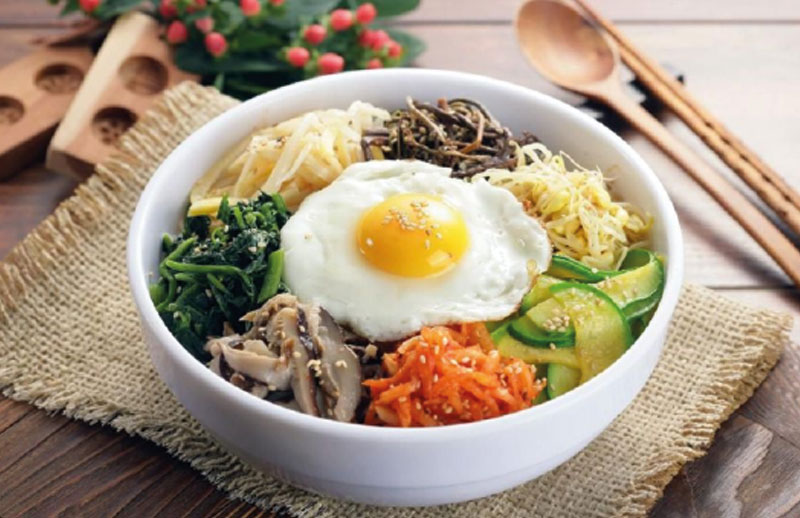
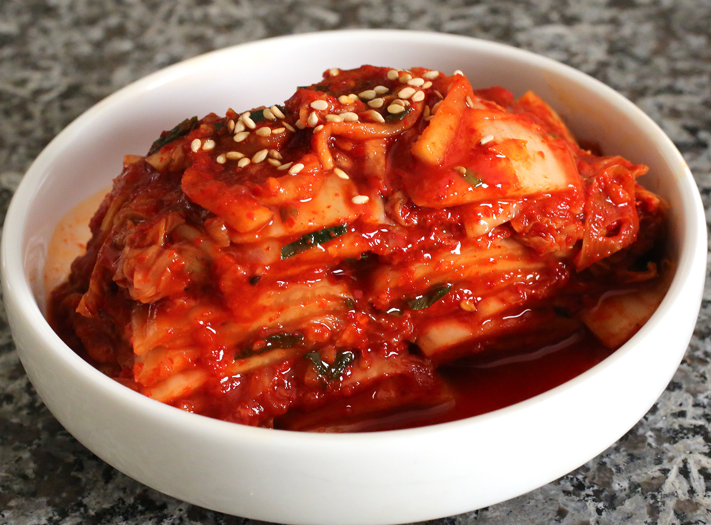
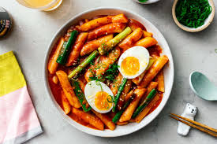
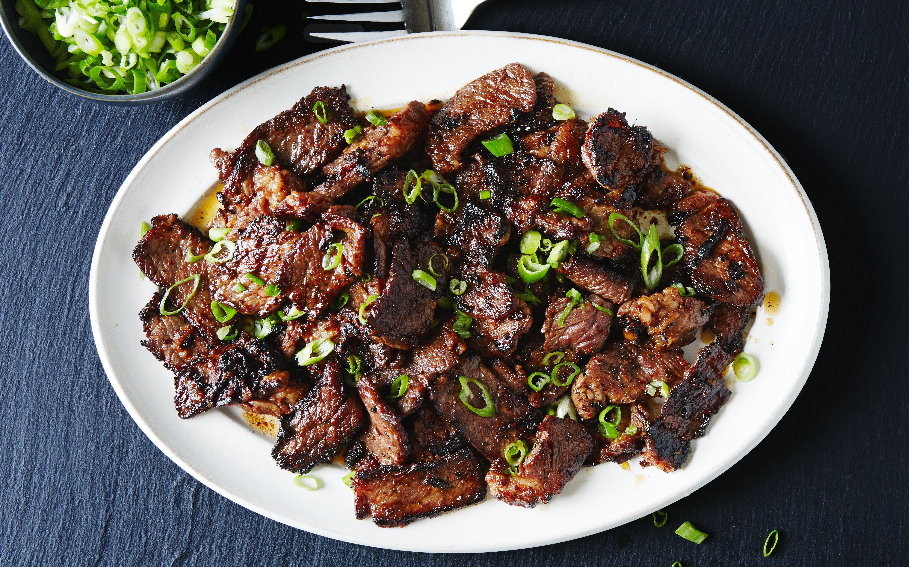
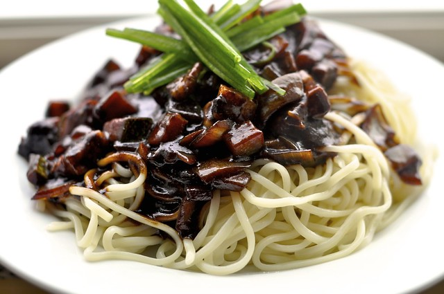
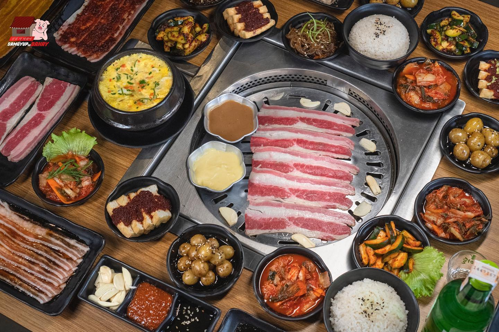

Images

Bibimbap
Another must-try during your visit to Seoul is bibimbap, a filling and nutritious dish that’s widely available in restaurants, food courts, and street markets. Depending on region and ingredients used, bibimbap can be served as a meat-based or vegetarian dish.

Kimji
Signature Korean dish has been around for more than 2,000 years, dating back to the Shilla Dynasty. Kimchi consists of Korean cabbage, radish, pumpkin, onion, ginger, and scallion with chili powder, crushed garlic and salted seafood, which is then left to ferment.

Red Rice Cakes (Tteokbokki)
Tteokbokki is a traditional Korean street food that’s made with thick slices of garaetteok (boiled rice cake), fish cake, onions, diced garlic, salt, sugar and assorted vegetables that are stir-fried in sweet red chili sauce. Distinguished by its bright red-orange ensemble, this popular snack is usually sold at street vendors and independent snack bars.

Bulgogi
Bulgogi consists of thin slices of marinated beef sirloin that are cooked alongside sliced onions, green peppers, and garlic using a charcoal burner, resulting in a distinctive smoky flavour. Prior to grilling, the meat is marinated between 2 and 4 hours in a mixture of soy sauce, sesame oil, black pepper, garlic, onions, ginger, and sugar to enhance its flavour and tenderness.

Korean stew (jjigae)
There are many different varieties of jjigae in Seoul, but this Korean stew usually contains meat, seafood or vegetables in a broth seasoned with hot pepper paste (gochujang), fermented miso (gaenjang), soybean paste, or salted fermented shrimp (saeujeot). Usually served as a palate cleanser between heavier dishes, jjigae has a similar consistency to a western stew.

Jajangmyeon
A Korean-Chinese fusion dish, jajangmyeon uses thick handmade wheat noodles topped with raw cucumber slices and a mixture of salty black soybean paste, diced pork and vegetables. Priced from 5,000 won onwards, this hearty noodle dish is great for when you need a quick meal that doesn't break the wallet.

Samgyeopsal
Samgyeopsal is another staple Korean dish that requires little culinary skills, where chunky slices of pork belly are cooked on a grill at the diners’ table. It's then wrapped in lettuce or sesame leaf with dipping sauces and accompaniments such as button mushrooms, green chili peppers, green onions, raw onions and garlic, as well as kimchi.

Korean fried chicken
Korean fried chicken takes on the quintessential American fast food with its own unique flair. Unlike its American counterparts, the chicken is coated with a sweet and spicy sauce (some restaurants add green pepper inside the batter for a spicier kick) before double frying it in vegetable oil.

Spicy cold noodle (bibim nengmyun)
Bibim nengmyun is served in a stainless steel bowl with a cold broth, julienned cucumbers, Korean pear slices, boiled egg, and slices of cold boiled beef. The long and thin noodles are made from flour and buckwheat or sweet potatoes, though seaweed and green tea are also used for other variations.